Introduction
This notebook cover the functionality of the Local Spatial Autocorrelation section of the GeoDa workbook. We refer to that document for details on the methodology, references, etc. The goal of these notes is to approximate as closely as possible the operations carried out using GeoDa by means of a range of R packages.
The notes are written with R beginners in mind, more seasoned R users can probably skip most of the comments on data structures and other R particulars. Also, as always in R, there are typically several ways to achieve a specific objective, so what is shown here is just one way that works, but there often are others (that may even be more elegant, work faster, or scale better).
For this notebook, we use Cleveland house price data. Our goal in this lab is show how to assign spatial weights based on different distance functions.
Objectives
After completing the notebook, you should know how to carry out the following tasks:
Identify clusters with the Local Moran cluster map and significance map
Identify clusters with the Local Geary cluster map and significance map
Identify clusters with the Getis-Ord Gi and Gi* statistics
Identify clusters with the Local Join Count statistic
Interpret the spatial footprint of spatial clusters
Assess potential interaction effects by means of conditional cluster maps
Assess the significance by means of a randomization approach
Assess the sensitivity of different significance cut-off values
Interpret significance by means of Bonferroni bounds and the False Discovery Rate (FDR)
R Packages used
sf: To read in the shapefile and make queen contiguity weights
spdep: To create spatial weights structure from neighbors structure
robustHD: To compute standarized scores for variables and lag variables
tmap: To construct significance and cluster maps with custom functions
tidyverse: To manipulate the data
RColorBrewer: To create custom color palattes that mirror the GeoDa cluster and significance maps
R Commands used
Below follows a list of the commands used in this notebook. For further details and a comprehensive list of options, please consult the R documentation.
Base R:
install.packages,library,setwd,summary,attributes,lapply,class,length,rev,cut,mean,sample,as.data.frame,matrix,unique,as.character,which,order,data.frame,ifelse,sum,rep,set.seedsf:
st_read,st_relatespdep:
nb2listw,lag.listwrobustHD:
standardizedtmap:
tm_shape,tm_borders,tm_fill,tm_layout,tm_facetstidyverse:
filter,mutate**RColorBrewer:
brewer.pal
Preliminaries
Before starting, make sure to have the latest version of R and of packages that are compiled for the matching version of R (this document was created using R 3.5.1 of 2018-07-02). Also, optionally, set a working directory, even though we will not actually be saving any files.2
Load packages
First, we load all the required packages using the library command. If you don’t have some of these in your system, make sure to install them first as well as their dependencies.3 You will get an error message if something is missing. If needed, just install the missing piece and everything will work after that.
library(sf)
library(spdep)
library(tmap)
library(tidyverse)
library(RColorBrewer)
library(robustHD)
library(geodaData)
library(Matrix)
library(biclust)
library(ggplot2)geodaData
All of the data for the R notebooks is available in the geodaData package. We loaded the library earlier, now to access the individual data sets, we use the double colon notation. This works similar to to accessing a variable with $, in that a drop down menu will appear with a list of the datasets included in the package. For this notebook, we use guerry.
guerry <- geodaData::guerryMaking the weights
To start we create a function for queen contiguity, which is just st_relate with the specified pattern for queen contiguity which is F***T****
st_queen <- function(a, b = a) st_relate(a, b, pattern = "F***T****")We apply the queen contiguity function to the voronoi polygons and see that the class of the output is sgbp. This structure is close to the nb structure, but has a few difference that we will need to correct to use the rest of spdep functionality.
queen.sgbp <- st_queen(guerry)
class(queen.sgbp)## [1] "sgbp"This function converts type sgbp to nb. It is covered in more depth in the Contiguity Based Weight notebook. In short, it explicitly changes the name of the class and deals with the observations that have no neighbors.
as.nb.sgbp <- function(x, ...) {
attrs <- attributes(x)
x <- lapply(x, function(i) { if(length(i) == 0L) 0L else i } )
attributes(x) <- attrs
class(x) <- "nb"
x
}queen.nb <- as.nb.sgbp(queen.sgbp)To go from neighbors object to weights object, we use nb2listw, with default parameters, we will get row standardized weights.
queen.weights <- nb2listw(queen.nb,style = "B", zero.policy = TRUE)Univariate analysis
Throughout the notebook, we will focus on the variable Donatns, which is charitable donations per capita. Before proceeding with the local spatial statistics and visualizations, we will take preliminary look at the spatial distribution of this variable. This is done with tmap functions. We will not go into too much detail on these because there is a lot to cover local spatial statistics and this functionality was covered in a previous notebook. Please the Basic Mapping notebook for more information on basic tmap functionality
For the univariate map, we use the natural breaks or jenks style to get a general sense of the spatial distribution for our variable.
tm_shape(guerry) +
tm_fill("Donatns", style = "jenks", n = 6) +
tm_borders() +
tm_layout(legend.outside = TRUE, legend.outside.position = "left")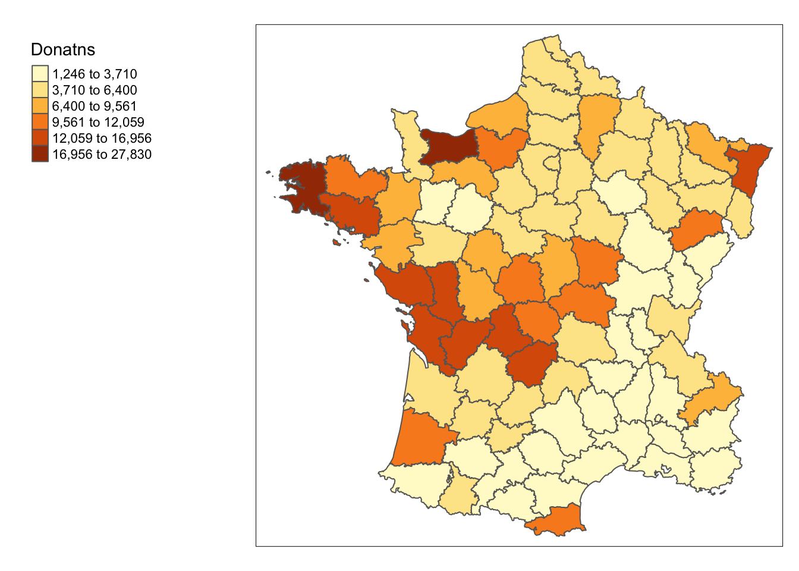
Local Moran
Principle
The local Moran statistic was suggested in Anselin(1995) as a way to identify local clusters and local spaital outliers. Most global spatial autocorrelation can be expressed as a double sum over i and j indices, such as \(\Sigma_i\Sigma_jg_{ij}\). The local form of such a statistic would then be, for each observation(location)i, the sum of the relevant expression over the j index, \(\Sigma_jg_{ij}\).
Specifically, the local Moran statistic takes the form \(cz_i\Sigma_jw_{ij}z_j\), with z in deviations from the mean. The scalar c is the same for all locations and therefore does not play a role in the assessment of significance. The latter is obtained by means of a conditional permutation method, where, in turn, each \(z_i\) is held fixed, and the remaining z-values are randomly permuted to yield a reference distribution for the statistic. This operates in the same fashion as for the global Moran’s I, except that the permutation is carried out for each observation in turn. The result is a pseudo p-value for each location, which can then be used to assess significance. Note that this notion of significance is not the standard one, and should not be interpreted that way (see the discussion of multiple comparisons below).
Assessing significance in and of itself is not that useful for the Local Moran. However, when an indication of significance is combined with the location of each observation in the Moran Scatterplot, a very powerful interpretation becomes possible. The combined information allows for a classification of the significant locations as high-high and low-low spatial clusters, and high-low and low-high spatial outliers. It is important to keep in mind that the reference to high and low is relative to the mean of the variable, and should not be interpreted in an absolute sense.
Implementation
Throughout many of the mapping function we make in this notebook, the weights from spdep need to be convert to a full size spatial weights matrix for statistical computations. Here we make a function convert_matrix to accomplish this. We use as to convert to type symmetricMatrix.
convert_matrix <- function(weights){
W <- as(weights, "symmetricMatrix")
W <- as.matrix(W/Matrix::rowSums(W))
W[which(is.na(W))] <- 0
W
}
W <- convert_matrix(queen.weights)## Registered S3 methods overwritten by 'spatialreg':
## method from
## residuals.stsls spdep
## deviance.stsls spdep
## coef.stsls spdep
## print.stsls spdep
## summary.stsls spdep
## print.summary.stsls spdep
## residuals.gmsar spdep
## deviance.gmsar spdep
## coef.gmsar spdep
## fitted.gmsar spdep
## print.gmsar spdep
## summary.gmsar spdep
## print.summary.gmsar spdep
## print.lagmess spdep
## summary.lagmess spdep
## print.summary.lagmess spdep
## residuals.lagmess spdep
## deviance.lagmess spdep
## coef.lagmess spdep
## fitted.lagmess spdep
## logLik.lagmess spdep
## fitted.SFResult spdep
## print.SFResult spdep
## fitted.ME_res spdep
## print.ME_res spdep
## print.lagImpact spdep
## plot.lagImpact spdep
## summary.lagImpact spdep
## HPDinterval.lagImpact spdep
## print.summary.lagImpact spdep
## print.sarlm spdep
## summary.sarlm spdep
## residuals.sarlm spdep
## deviance.sarlm spdep
## coef.sarlm spdep
## vcov.sarlm spdep
## fitted.sarlm spdep
## logLik.sarlm spdep
## anova.sarlm spdep
## predict.sarlm spdep
## print.summary.sarlm spdep
## print.sarlm.pred spdep
## as.data.frame.sarlm.pred spdep
## residuals.spautolm spdep
## deviance.spautolm spdep
## coef.spautolm spdep
## fitted.spautolm spdep
## print.spautolm spdep
## summary.spautolm spdep
## logLik.spautolm spdep
## print.summary.spautolm spdep
## print.WXImpact spdep
## summary.WXImpact spdep
## print.summary.WXImpact spdep
## predict.SLX spdepTo compute the observed value of the local moran statistc, we make a function. The computation is pretty simple it is the standardized variable time the spatial lag of the standardized variable. The spatial lag variable can be calculated as the full spatial weights matrix times the standardized variable. To compute the spatial lag variable, we use matrix multiplication, which is done with **%*% in R. Then the local statistic is just z*W%*%z We then use our function on the Donatns variable and W**, which we converted from the queen contiguity weights.
univariate_moran <- function(x, W){
z <- standardize(x)
local <- (z*W%*%z)
local
}
lmoran <- univariate_moran(guerry$Donatns,W)Throughout this notebook, we will be taking a conditional random approach to assess significance with each local spatial statistic as outlined in (Anselin 1995). The basic approach here is to compute a reference distribution for each location. This is done by holding the value constant at each location then taking a random samples from the rest of the obseravtions for the neighbors. With spatially random draws for the neighbors, we then calculate the statistic for the permutation.
We can build a function that computes a reference distribution of local moran statistics for each location. These references distributions are used to assess the significance of the observed local moran statistics. To start, we get the number of locations by using nrow on the weights matrix. Then we get the corresponding id index numbers with 1:n. We create two matrices, one to store the reference local moran statistics, and the other to store the spatially random samples our x variable. The number of rows corresponds to the number of locations and the number of columns is the number of permutations used. The final product in the local.sims matrix will be a reference distribution for each location in a row. We will show this explicitly after we’ve made the function. To fill the sample matrix, we use sample on id, of length permutations. We sample the id vector for all indices except i, which is the location for which we are constructing the distribution. This is common practice for all of the spatial statistics we will encounter in this notebook. After getting the sample indices, we use them to assess the corresponding value in the x variable. This results in a matrix with spatially randomized values of the x variable. Next we use apply to standardize the values in the sample matrix. Lastly, we compute the local statistics for each permutation and location by multiplying the standardized sample values matrix by the weights matrix
univariate_moran_sim <- function(x, W, permutations){
n <- nrow(W)
id <- 1:n
#place to store results
local.sims <- matrix(NA, nrow = n, ncol=permutations)
x.sample = matrix(NA, nrow = n, ncol = permutations)
# filling each column of the sample matrix
for(i in 1:n){
sample.indices <- sample(id[-i], permutations, replace = TRUE)
x.sample[i,] <- x[sample.indices]
}
#standardizing the x sample values
z.sample <- (x.sample - apply(x.sample, 1, mean))/apply(x.sample, 1, sd)
#standardizing x
z <- standardize(x)
#calculating the local statistics
local.sims <- (z*W%*%z.sample)
local.sims
}We use the function created above with Donatns, W, and 999 permutations.
moran_ref <- univariate_moran_sim(guerry$Donatns,W,999)Here we show the reference distribution of local moran statistics for the 1st location in the sf data frame. To do this, we just grab the first row of moran_ref, put it into a data frame and then plot it with ggplot2. The blue corresponds the the observed local moran statistic. The p_value here would be the area under the density curve to the left of the observed statistic.
observed_1 <- lmoran[1]
location_1 <- data.frame(local_moran = moran_ref[1,])
ggplot(location_1, aes(x=local_moran)) +
geom_density() +
geom_vline(xintercept = observed_1, col = "blue")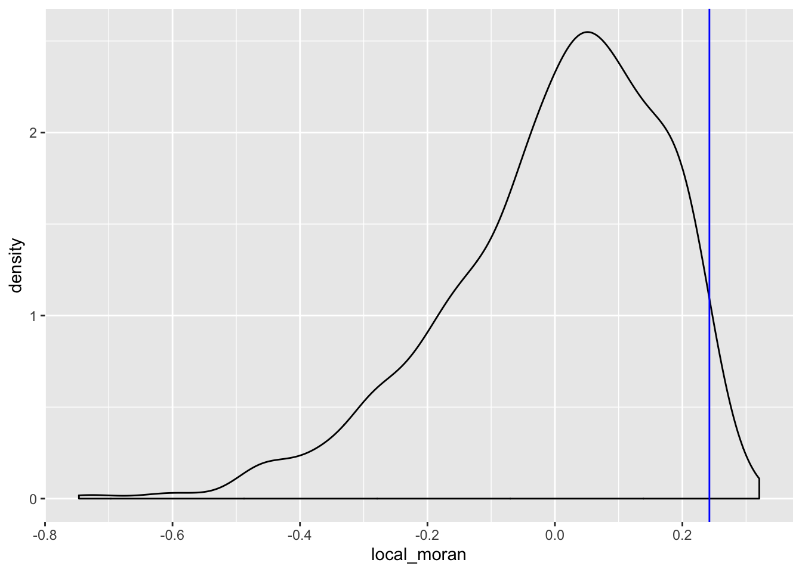
The location corresponding to the reference distribution above is found here:
guerry_location_1 <- guerry[1,]
tm_shape(guerry) +
tm_borders() +
tm_shape(guerry_location_1) +
tm_fill(col = "blue")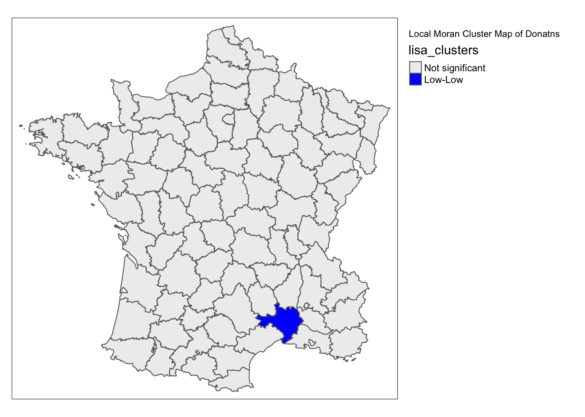
With the reference distributions and observed statistics for each location, we can compute a pseudo pvalue for each location. For this, we just loop through each location and calculate the number of permuations that are greater than the observed statistic and store them in a vector. The pvalue is then calculated as a fraction of 1 + number greater divided by the number of permuations plus one. Since the significance is two-sided, we will need to account for p-values close to one. For this, we use ifelse to assign (1- value) if the value is greater than .5. This allows us to account for both ends of the conditional distribution.
get_p_value <- function(mat, observed,type = "one-sided") {
nperm <- ncol(mat)
nlocs <- nrow(mat)
p_value <- rep(NA,nlocs)
for(i in 1:nlocs){
num_greater <- length(which(mat[i,] >= observed[i]))
p_value[i] <- (num_greater + 1) / (nperm + 1)
}
if (type == "two-sided"){
p_value <- ifelse(p_value > .5, 1-p_value, p_value)
p_value
} else {
p_value
}
}
p_value <- get_p_value(moran_ref, lmoran,type="two-sided")
p_value## [1] 0.024 0.271 0.338 0.046 0.068 0.001 0.408 0.398 0.082 0.159 0.012 0.002
## [13] 0.208 0.321 0.036 0.053 0.130 0.334 0.348 0.011 0.028 0.059 0.377 0.053
## [25] 0.094 0.495 0.076 0.001 0.034 0.272 0.192 0.022 0.299 0.101 0.432 0.045
## [37] 0.253 0.099 0.423 0.115 0.051 0.092 0.438 0.409 0.342 0.013 0.147 0.040
## [49] 0.276 0.192 0.431 0.261 0.146 0.021 0.193 0.388 0.463 0.388 0.118 0.452
## [61] 0.262 0.396 0.019 0.057 0.404 0.183 0.122 0.019 0.233 0.314 0.349 0.356
## [73] 0.134 0.384 0.046 0.451 0.002 0.035 0.004 0.002 0.080 0.029 0.032 0.345
## [85] 0.286Here we add coumn in the sf data frame, so we can use tmap functions to make significance and cluster maps.
With the p-values, we can now move on to mapping. For the LISA significance map and the LISA cluster map, we will need to know which areas have significant p-values. We will need to assign categorical labels to indicate this for mapping purposes. There are many ways to assign these labels for instance it can be done with ifelse statements, but it is very messy. I found that using cut is the most concise way to accomplish this task. In cut, we specify breaks that correspond with the desired level of significance. In our case the minimum level of significance is .05. If we wanted the minimum classification of significance to be .01, the last interval in the breaks paramter would be .01 to 1. Additionaly, if we want to show higher levels of significance we would include the values in the breaks parameter. For example to add .0001, we would include it in between 0 and .001. When choosing the breaks, make sure the labels corrrespond to the correct level of significance.
guerry$significance <- cut(p_value,
breaks = c(0, .001, .01, .05, 1),
labels = c("p = .001", "p = .01", "p = .05", "Not Significant"))With the significance variable, we can make a preliminary LISA significance map with tmap. This tutorial focuses on local spatial autocorrelation, so we will not go into too much depth on tmap, but for more indepth coverage please see the Basic Mapping Notebook or the tmap documentation.
tm_shape(guerry) +
tm_fill("significance", palette = "-Greens") +
tm_borders() +
tm_layout(legend.outside = TRUE, title = "LISA significance map")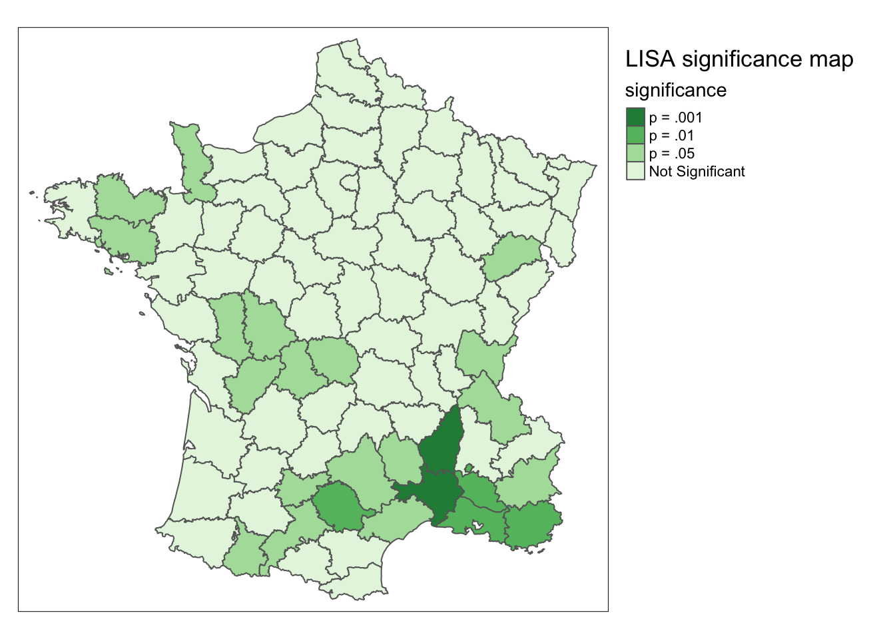
To get closer to the GeoDa mapping style, we can use RColorBrewer to create a specialized palette for the significance map. For this we will need to use brewer.pal to generate a palette of Greens. We will need to reverse the order of this palette to recreate the the plot, which is done with the base R function rev. At the end of the palette, we replace the last green shade with the hexadecimal number for grey.
pal <- rev(brewer.pal(4, "Greens"))
pal[4] <- "#D3D3D3"With the new palette, we can create the map. The difference here is that we use our palette pal instead of "-Greens"
tm_shape(guerry) +
tm_fill("significance", palette = pal) +
tm_borders() +
tm_layout(legend.outside = TRUE, title = "LISA significance map")Each spatial statistic in this tutorial comes with a significance mapping component. In order to avoid repetitive code, we will make a significance map function, using the process outlined above. It is a bit tricky in that we must get the proper breaks and labels for the map from the p-value data.
significance_map <- function(polys, pvalues, permutations, alpha){
# function to create significance map
# arguments:
# polys: sf dataframe
# pvalue_vector: a vector of p-values
# permutations: the number of permuations used to calculate the pvalues
# min.sig: the alpha level required for significance
# returns:
# a significance map in GeoDa style
target_p <- 1 / (1 + permutations)
potential_brks <- c(.00001, .0001, .001, .01)
brks <- potential_brks[which(potential_brks > target_p & potential_brks < alpha)]
brks2 <- c(target_p, brks, alpha)
labels <- c(as.character(brks2), "Not Significant")
brks3 <- c(-.000001, brks2, 1)
cuts <- cut(pvalues, breaks = brks3,labels = labels)
polys <- polys %>% mutate(sig = cuts)
pal <- rev(brewer.pal(length(labels), "Greens"))
pal[length(pal)] <- "#D3D3D3"
tm_shape(polys) +
tm_fill("sig", palette = pal) +
tm_borders() +
tm_layout(title = "Significance Map", legend.outside = TRUE)
}To build the LISA cluster map, we will need to know which quadrant of the global Moran’s I scatterplot each location is in. To do this, we will create the stardardized version of the the variable and the lag of this variable. High-high will correspond to positive values for both the original variable and the lag. High-low will be positive for the original variable and negative for the lag variable. Vice versa for low-high. We use standardize to standardize our variable.
z <- standardize(guerry$Donatns)There are many ways to assign the correct LISA patterns, but some are more concise and intuitive than others. We use interacction to assign TRUE and FALSE boolean values based on two condtionals. One for the standardized variable being greater than 0 and the other for the lagged standardized variable or \(Wx\) being greater than zero. We use as.character to convert the booleans to characters. Next, we use str_replace_all to replace “TRUE” with “High” and “FASLE” with “Low”. With this, we have the correct LISA cluster designations assigned to each location. The last step is assign “Not Significant” to the locations with p_values of greater than .05, which we computed earlier.
patterns <- as.character( interaction(z > 0, W%*%z > 0) )
patterns <- patterns %>%
str_replace_all("TRUE","High") %>%
str_replace_all("FALSE","Low")
patterns[which(p_value > .05)] <- "Not Significant"
guerry <- guerry %>% mutate(patterns = patterns)Before building the plot, we will need to know which classifications are significant. We will build a palette that contains colors for the significant classifications. All of the classifications will not always be significant in eahc plot. We check this with unique on the patterns variable.
unique(guerry$patterns)## [1] "Low.Low" "Not Significant" "High.High" "Low.High"
## [5] "High.Low"match_palette <- function(patterns, classifications, colors){
classes_present <- unique(patterns)
mat <- matrix(c(classifications,colors), ncol = 2)
logi <- classifications %in% classes_present
pre_col <- matrix(mat[logi], ncol = 2)
pal <- pre_col[,2]
pal
}colors <- c("#DE2D26","#FCBBA1","#C6DBEF", "#3182BD", "#D3D3D3")
classes <- c("High.High","High.Low","Low.High", "Low.Low", "Not Significant")
pal <- match_palette(patterns, classes, colors)Using the palette from above, we can create our LISA cluster map with the color scheme used in GeoDa.
tm_shape(guerry) +
tm_fill("patterns", palette = pal) +
tm_borders() +
tm_layout("LISA map")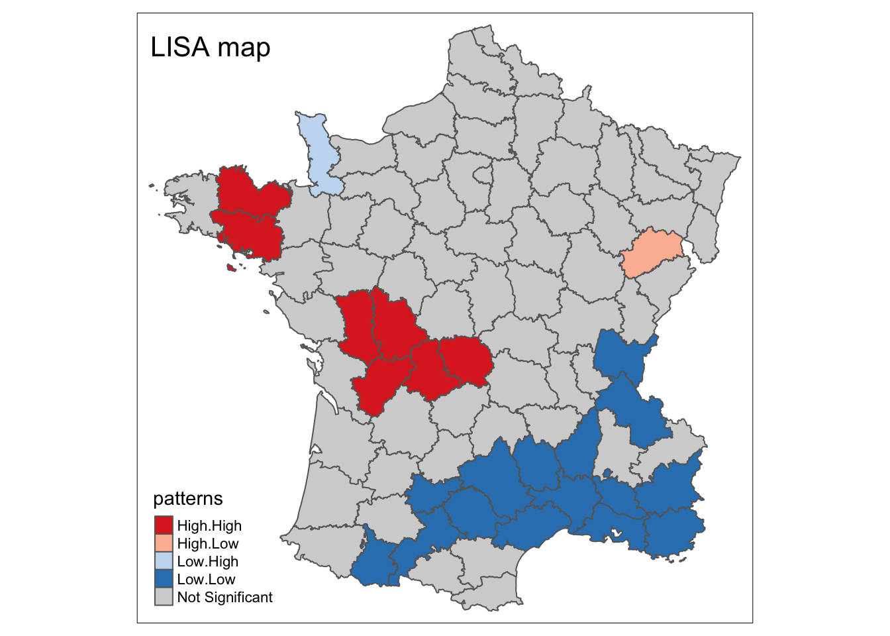
Putting it all together
With this function, we put together all of the previous steps and functions to create a lisa map and a correspondign significance map. The only new code in this function is the code to create the correct palette based on the cluster classifications present. This code gives the correct classification palette when there are some not present. So if there are no High.Low classifications that are significant, that color will not appear on the map and the other classification will have the correct colors.
In order to use this function, the helper functions must also be loaded in your environment. These include: convert_matrix, univariate_moran, univariate_moran_sims, get_p_value, and significance_map
univariate_lisa_map <- function(area,x, weights, permutations, alpha){
# function to create a bivariate LISA map
# arguments:
# area: sf dataframe
# x: vectors of x values
# y: a vector of y values
# nperms: the number of permuations used to calculate the pvalues
# alpha: the alpha level required for significance
# returns:
# a LISA map in GeoDa style
# Converting the weights
W <- convert_matrix(weights)
# Computing the observed statistics and reference distributions
observed <- univariate_moran(x,W)
sims <- univariate_moran_sim(x,W, permutations = permutations)
#computing p-value from observed statistics and reference distribution
p_value <- get_p_value(sims,observed, type = "two-sided")
# Standardizing the x and y vars
z <- standardize(x)
#Assigning classifications
lisa_patterns <- as.character( interaction(z > 0, W%*%z > 0) )
lisa_patterns <- patterns %>%
str_replace_all("TRUE","High") %>%
str_replace_all("FALSE","Low")
lisa_patterns[which(p_value > alpha)] <- "Not Significant"
# Adding the classifications to the data frame
area <- area %>% mutate(lisa_patterns)
# Constructing the correct palette based on presense of classifications
patts <- c("High.High", "High.Low", "Low.High", "Low.Low", "Not Significant")
colors <- c("#DE2D26","#FCBBA1","#C6DBEF", "#3182BD", "#D3D3D3")
pal <- match_palette(lisa_patterns,patts,colors)
# Making the LISA map
p1 <- tm_shape(area) +
tm_fill("lisa_patterns", palette = pal) +
tm_borders() +
tm_layout(title = "LISA cluster map", legend.outside = TRUE)
p2 <- significance_map(area, p_value, permutations = permutations,alpha = alpha)
tmap_arrange(p1,p2, ncol = 1)
}Here we use the mapping function made above, it outputs both a local moran cluster map and the corresponding significance map.
p <- univariate_lisa_map(guerry,guerry$Donatns,queen.weights,999,.05)
p
We can assess the individual plots with doublt brackets. 1 will give us the local moran cluster map
p[[1]]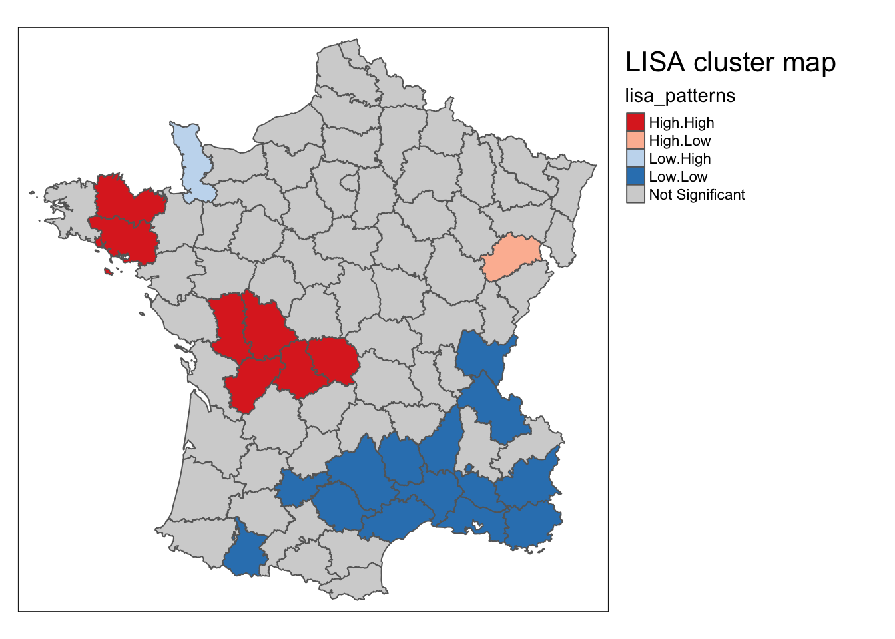
index 2 gives us the significance map.
p[[2]]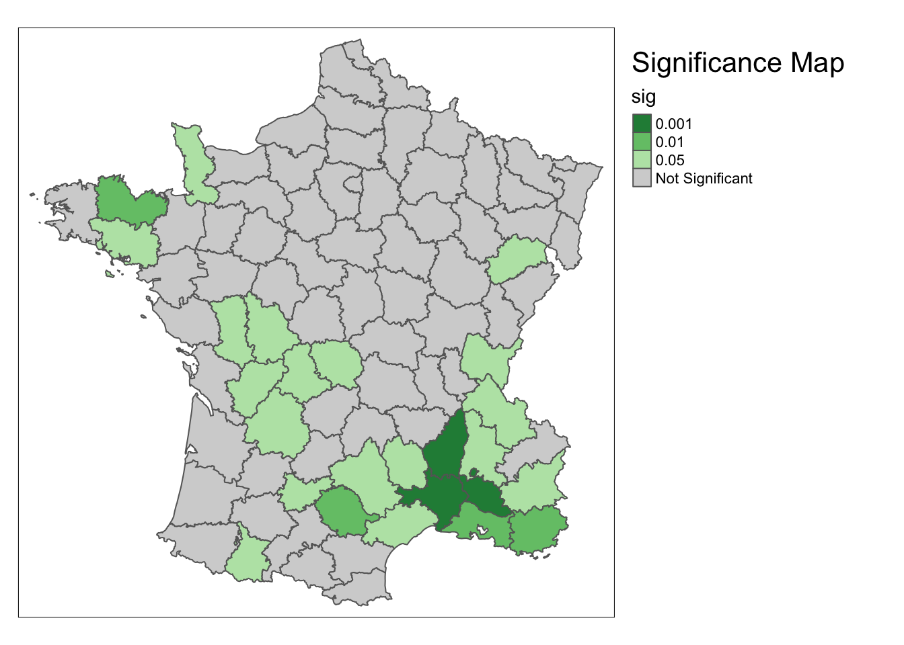
Randomization Options
To obtain higher significance levels, we need to use more permutations in the calculation of the the local moran for each location. For instance, a pseudo pvalue of .00001 would require 999999 permutations. To get more permutations, we just use 99999 instead of 999 for the permutations parameter in our local moran mapping function.
p <- univariate_lisa_map(guerry,guerry$Donatns,queen.weights,99999,.05)
p[[1]]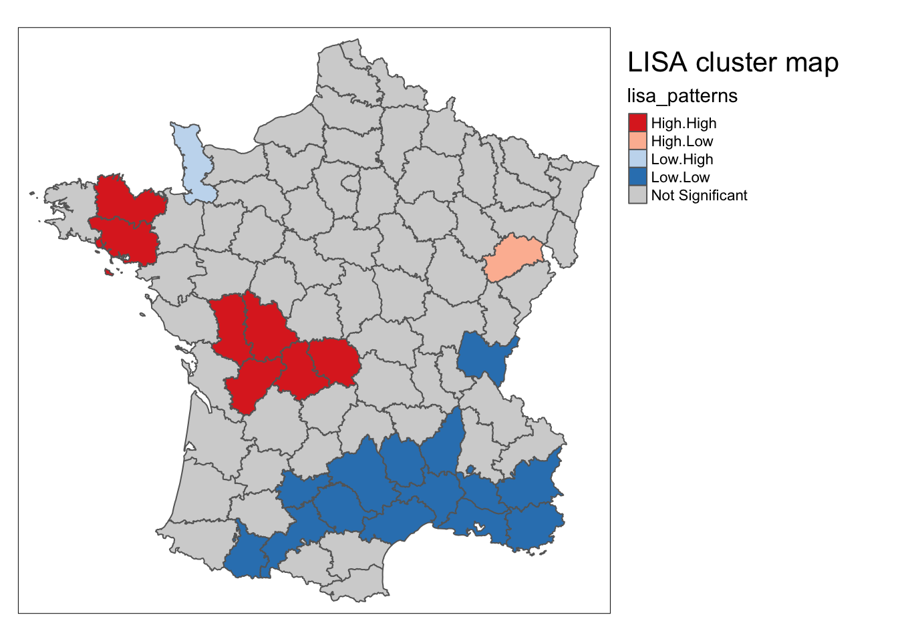
p[[2]]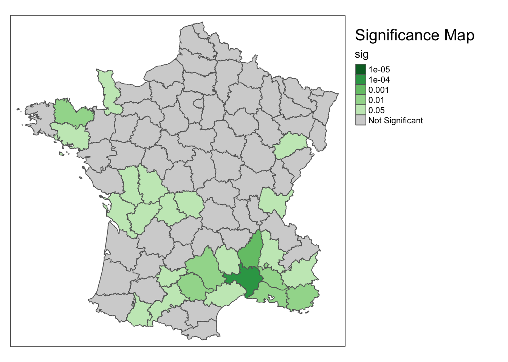
Significance
An important methodological issue associated with the local spatial autocorrelation statistics is the selection of the p-value cut-off to properly reflect the desired Type I error. Not only are the pseudo p-values not analytical, since they are the result of a computational permutation process, but they also suffer from the problem of multiple comparisons (for a detailed discussion, see de Castro and Singer 2006). The bottom line is that a traditional choice of 0.05 is likely to lead to many false positives, i.e., rejections of the null when in fact it holds.
Bonferroni bound
The Bonferroni bound constructs a bound on the overall p-value by taking \(\alpha\) and dividing it by the number of comparisons. In our context, the latter corresponds to the number of observation, n. As a result, the Bonferroni bound would be \(\alpha/n = .00012\), the cutoff p-value to be used to determine significance. To implement the bonferroni bound, we use 99999 permutations and set the alpha level to be bonferroni or .01 / 85
bonferroni <- .01 / 85
p <- univariate_lisa_map(guerry,guerry$Donatns,queen.weights,99999,bonferroni)p[[1]]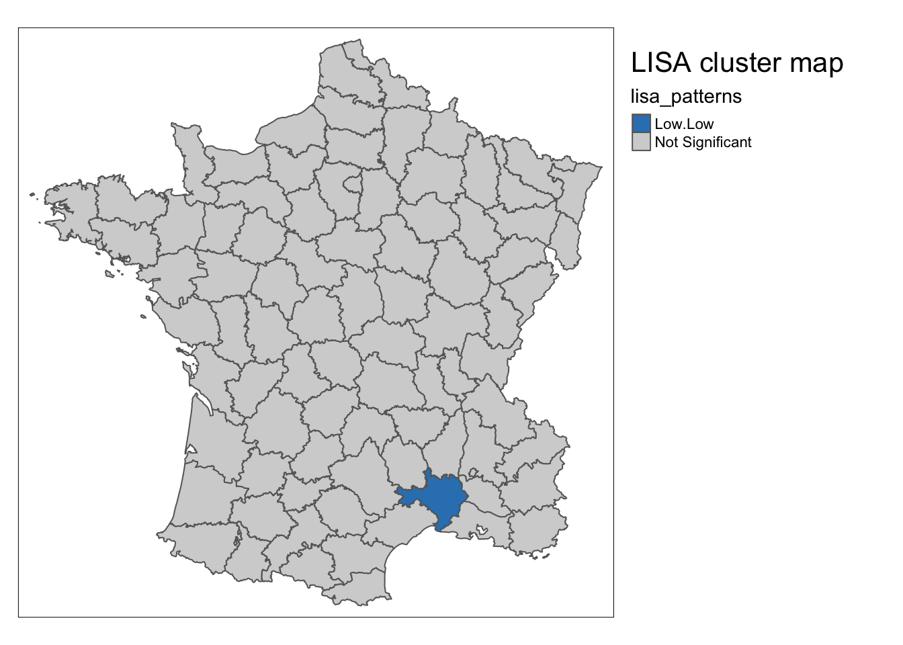
p[[2]]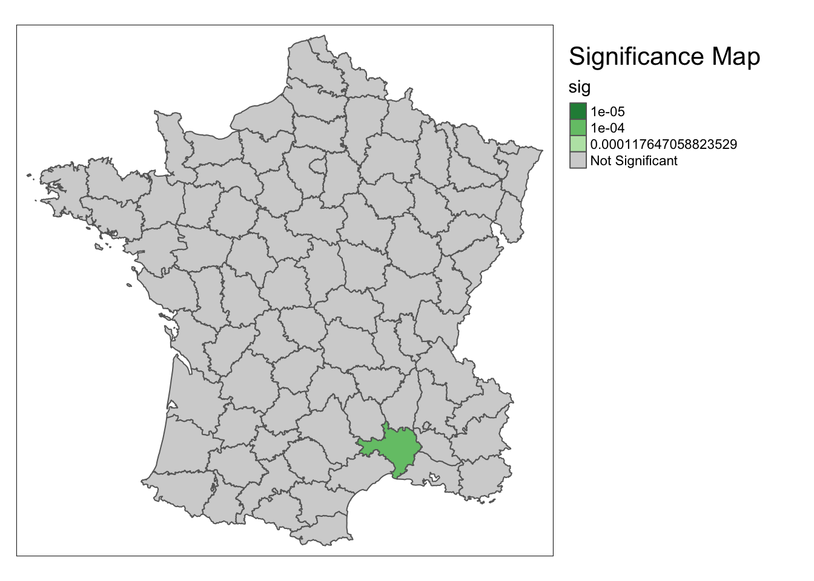
Interpretation of significance
As mentioned, there is no fully satisfactory solution to deal with the multiple comparison problem. Therefore, it is recommended to carry out a sensitivity analysis and to identify the stage where the results become interesting. A mechanical use of 0.05 as a cut off value is definitely not the proper way to proceed.
Also, for the Bonferroni and FDR procedures to work properly, it is necessary to have a large number of permutations, to ensure that the minimum p-value can be less than \(\alpha/n\). Currently, the largest number of permutations that GeoDa can support is 99999. In R, we can do more, however the runtime is not ideal. For the bonferroni criterion to yield significant values, we must implement a minimum number of permutations, otherwise we cannot assess significance. This is not due to a characteristic of the data, but to the lack of sufficient permutations to yield a pseudo p-value that is small enough.
Interpretation of clusters
Strictly speaking, the locations shown as significant on the significance and cluster maps are not the actual clusters, but the cores of a cluster. In contrast, in the case of spatial outliers, they are the actual locations of interest.
Conditional local cluster maps
To make the conditional map, we first need to make two categorical variables, with two categories. cut breaks the data up into two equal pieces. With the two categorical variables, we can create facets with tmap.
guerry$cut.literacy <- cut(guerry$Litercy, breaks = 2)
guerry$cut.clergy <- cut(guerry$Clergy, breaks = 2)To make the conditional maps, we use the same tmap function and palette as the LISA cluster map. The only addition is tm_facets, which will use the two categorical variables created above.
tm_shape(guerry) +
tm_fill("patterns", palette = pal) +
tm_borders() +
tm_facets(by = c("cut.clergy", "cut.literacy"),free.coords = FALSE,drop.units=FALSE)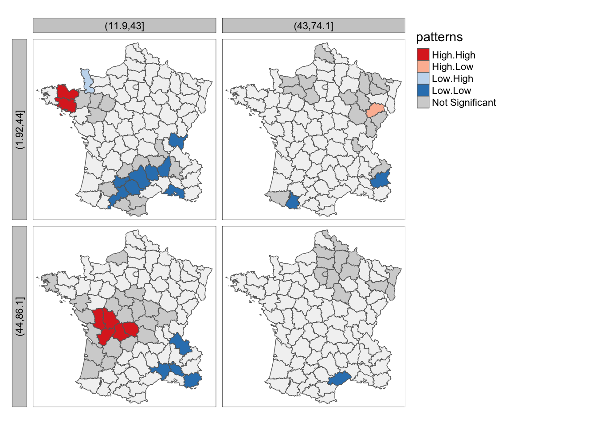
Local Geary
Principle
The Local Geary statistic, first outlined in Anselin (1995), and further elaborated upon in Anselin (2018), is a Local Indicator of Spatial Association (LISA) that uses a different measure of attribute similarity. As in its global counterpart, the focus is on squared differences, or, rather, dissimilarity. In other words, small values of the statistics suggest positive spatial autocorrelation, whereas large values suggest negative spatial autocorrelation.
Formally, the Local Geary statistic is
\[LG_i = \Sigma_jw_{ij}(x_i-x_j)^2\]
in the usual notation.
Inference is again based on a conditional permutation procedure and is interpreted in the same way as for the Local Moran statistic. However, the interpretation of significant locations in terms of the type of association is not as straightforward. In essence, this is because the attribute similarity is not a cross-product and thus has no direct correspondence with the slope in a scatter plot. Nevertheless, we can use the linking capability within GeoDa to make an incomplete classification.
Those locations identified as significant and with the Local Geary statistic smaller than its mean, suggest positive spatial autocorrelation (small differences imply similarity). For those observations that can be classified in the upper-right or lower-left quadrants of a matching Moran scatter plot, we can identify the association as high-high or low-low. However, given that the squared difference can cross the mean, there may be observations for which such a classification is not possible. We will refer to those as other positive spatial autocorrelation.
For negative spatial autocorrelation (large values imply dissimilarity), it is not possible to assess whether the association is between high-low or low-high outliers, since the squaring of the differences removes the sign.
Implementation
The local geary is not implemented in spdep, so we will have to compute the local statistics with base functionality and the lag.listw function from spdep. Before we begin, we will need to break up the formula for local Geary into managable pieces.
\[LG_i = \Sigma_jw_{ij}(x_i-x_j)^2\]
The above formula can be simplified into this:
\[LG_i = x_i^2 - 2x_i\Sigma_jw_{ij}x_j + \Sigma_jw_{ij}x_j^2\] With this simplification, we have three managable parts that can be easily calculated with the function available to us. Notice the middle terms is 2 times the \(x_i\) times the lag variable of x. The third term is the lag variable of x squared.
We start with a function to compute the observed statistic same as with the local moran. Using the simplified formula above we can compute the local geary statistic, which is x2 - 2*x*(W%*%x) + W%*%x2, with x2 being the x variable squared.
local_geary <- function(x,W){
x2 <- x^2
lg_x <- x2 - 2*x*(W%*%x) + W%*%x2
lg_x
}
lg <- local_geary(guerry$Donatns,W)As with the local moran, we will have to compute reference distributions for each location to compare the observed statistic with. We will follow a similar process with a few differences. The main difference here is that we need \(x^2\) values and the formula for the local statistic is different. The sampling process and structure for storing the local reference statistics is the same.
local_geary_sims <- function(x,W,permutations){
n <- nrow(W)
id <- 1:n
local.sims <- matrix(NA, nrow = n, ncol=permutations)
x.sample = matrix(NA, nrow = n, ncol = permutations)
for(i in 1:n){
sample.indices <- sample(id[-i], permutations, replace = TRUE)
x.sample[i,] <- x[sample.indices]
}
x2 <- x^2
x2.sample <- x.sample ^ 2
local.sims <- (x2 - 2*x*W%*%x.sample + W%*%x2.sample)
local.sims
}We use the function created above with the Donatns variable, W, and 999 permutations
sims <- local_geary_sims(guerry$Donatns,W,999)Here we use the get_p_value function that we created earlier. On the local geary reference distributions and the observed local geary statistics.
p_value <- get_p_value(sims,lg,type = "two-sided")With the p-values, we can make a significance map with significance_map
significance_map(guerry,p_value,999,.05)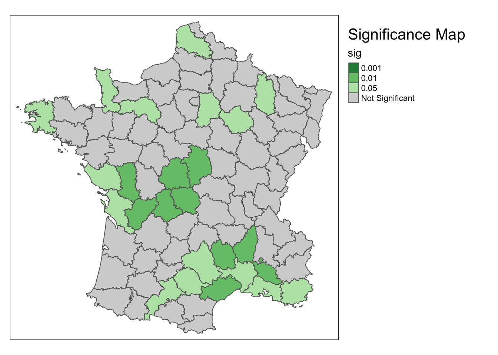
In order to build the local geary map classifications, we will need the mean of the reference distribution of local geary statistics for each location. This is simple to compute, we just need to take the mean of each row in sims. We use a for loop and 85 iterations, which is the number of polygon locations.
mean_lg <- rep(NA, 85)
for (i in 1:85){
mean_lg[i] <- mean(sims[i,])
}We start by assigning the “High-High” and “Low-Low” classifications, which follow the same rule as for the local moran. If both the standized variable and the lag of the standardized variable are positive it is “High-High”, and if they are both negative, it is “Low-Low”. Next we assign Negative for locations that a local geary statistic that is higher than the reference mean for its location. For locations with a lower observed local geary statistic than the reference mean, that also do not fit into the “High-High” or “Low-Low” classification, we assign “Other-Positive”. Lastly we assign “Not Significant” for all locations that don’t have a p-value of less than .05.
lg_classification <- rep(NA,85)
lg_classification[z >= 0 & W%*%z >= 0] <- "High-High"
lg_classification[z <= 0 & W%*%z <= 0] <- "Low-Low"
lg_classification[lg > mean_lg] <- "Negative"
lg_classification[lg < mean_lg & z*W%*%z < 0] <- "Other-Positive"
lg_classification[p_value >.05] <- "Not Significant"
guerry <- guerry %>% mutate(lg_classification)Here we build the palette to match the local geary classifications
classes <- c("High-High", "Low-Low", "Negative", "Other-Positive", "Not Significant")
colors <- c("#DE2D26","#FCBBA1","#9ECAE1", "#FEE5D9","#D3D3D3")
pal <- match_palette(lg_classification,classes,colors)tm_shape(guerry) +
tm_fill("lg_classification", palette = pal) +
tm_borders() +
tm_layout(legend.outside = TRUE)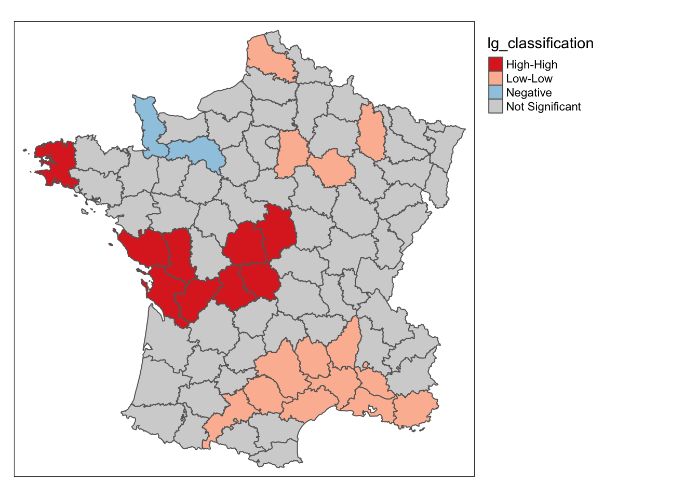
local_geary_map <- function(polys,x,weights,permutations,alpha){
#converting the matrix
W <- convert_matrix(weights)
n <- nrow(W)
#computing local geary statsitic and reference distributions for each location
lg <- local_geary(x,W)
sims <- local_geary_sims(x,W,permutations)
#computing p_values from the observed statistics and reference distributions
p_value <- get_p_value(sims,lg,type = "two-sided")
#computing mean local geary values for each location based on the reference distributions
mean_lg <- rep(NA, n)
for (i in 1:n){
mean_lg[i] <- mean(sims[i,])
}
# standardizing x
z <- standardize(x)
#classifying local geary patterns
lg_patterns <- rep(NA,n)
lg_patterns[z >= 0 & W%*%z >=0] <- "High-High"
lg_patterns[z <= 0 & W%*%z <=0] <- "Low-Low"
lg_patterns[lg > mean_lg] <- "Negative"
lg_patterns[lg < mean_lg & z*W%*%z < 0] <- "Other-Positive"
lg_patterns[p_value > alpha] <- "Not Significant"
polys <- polys %>% mutate(lg_patterns)
# creating the correct palette for the map
classes <- c("High-High", "Low-Low", "Negative", "Other-Positive", "Not Significant")
colors <- c("#DE2D26","#FCBBA1","#9ECAE1", "#FEE5D9","#D3D3D3")
pal <- match_palette(lg_patterns,classes,colors)
# Making the local geary map
p1 <- tm_shape(polys) +
tm_fill("lg_patterns", palette = pal) +
tm_borders() +
tm_layout(legend.outside = TRUE, title = "Local Geary Cluster Map")
#Making the significance map
p2 <- significance_map(polys,p_value,permutations,alpha)
# Outputing both the significance map and the local geary cluster map
tmap_arrange(p1,p2,ncol = 1)
}local_geary_map(guerry,guerry$Donatns,queen.weights,99999,.01)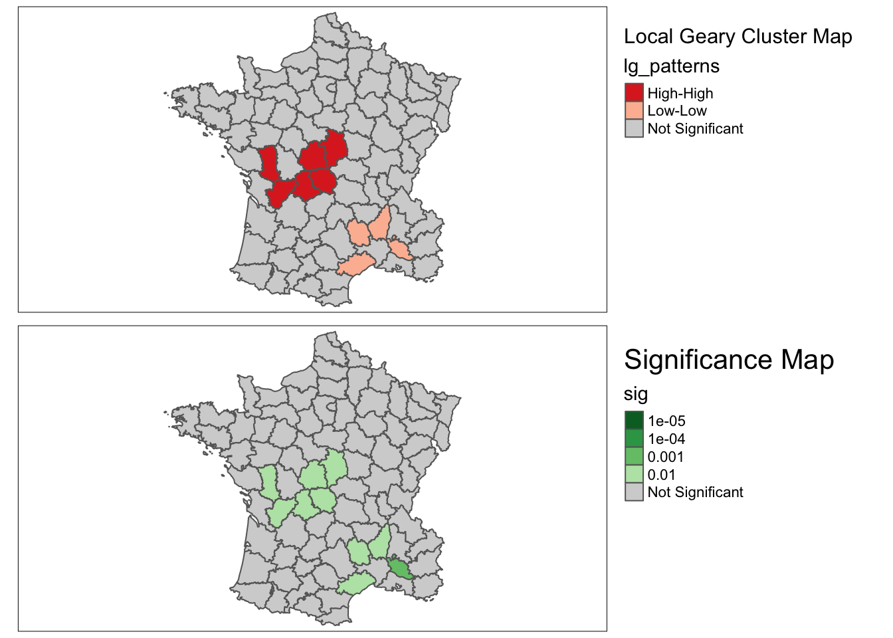
Interpretation and significance
Changing the significance threshold
local_geary_map(guerry,guerry$Donatns,queen.weights,99999,bonferroni)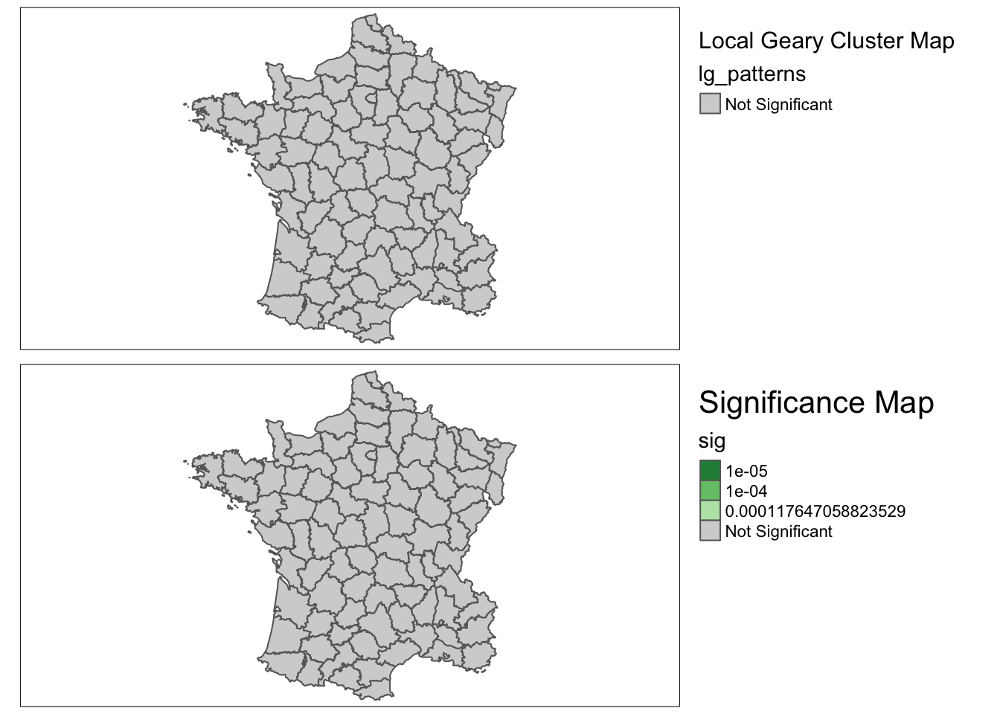
Getis-Ord Statistics
Principle
A third class of statistics for local spatial autocorrelation was suggested by Getis and Ord (1992), and further elaborated upon in Ord and Getis (1995). It is derived from a point pattern analysis logic. In its earliest formulation the statistic consisted of a ratio of the number of observations within a given range of a point to the total count of points. In a more general form, the statistic is applied to the values at neighboring locations (as defined by the spatial weights). There are two versions of the statistic. They differ in that one takes the value at the given location into account, and the other does not.
The \(G_i\) statistic consists of a ratio of the weighted average of the values in the neighboring locations, to the sum of all values, not including the value at the location \(x_i\)
\[G_i = \frac{\Sigma_{j\neq i}w_{ij}x_j}{\Sigma_{j\neq i}x_j}\]
In contrast, the \(G_i^*\) statistic includes the value \(x_i\) in numerator and denominator:
\[G_i^*=\frac{\Sigma_jw_{ij}x_j}{\Sigma_jx_j}\]
Note that in this case, the denominator is constant across all observations and simply consists of the total sum of all values in the data set.
The interpretation of the Getis-Ord statistics is very straightforward: a value larger than the mean (or, a positive value for a standardized z-value) suggests a high-high cluster or hot spot, a value smaller than the mean (or, negative for a z-value) indicates a low-low cluster or cold spot. In contrast to the Local Moran and Local Geary statistics, the Getis-Ord approach does not consider spatial outliers.
Inference is based on conditional permutation, using an identical procedure as for the other statistics.
Implementation
local_g <- function(x,W){
lag <- W%*%x
sum <- sum(x)
g <- lag/sum
}
g <- local_g(guerry$Donatns,W)
g## [,1]
## 1 0.005591602
## 2 0.009397496
## 3 0.012869755
## 4 0.005899573
## 5 0.005622224
## 6 0.004857546
## 7 0.009950736
## 8 0.009631099
## 9 0.007032592
## 10 0.007909610
## 11 0.006014938
## 12 0.003933049
## 13 0.015242825
## 14 0.009958611
## 15 0.020170714
## 16 0.019022821
## 17 0.015782358
## 18 0.013051155
## 19 0.010192047
## 20 0.027046638
## 21 0.019429600
## 22 0.017590355
## 23 0.012872671
## 24 0.006371504
## 25 0.017025325
## 26 0.011285570
## 27 0.021983195
## 28 0.003989335
## 29 0.006701873
## 30 0.009517652
## 31 0.015062592
## 32 0.005376372
## 33 0.013162269
## 34 0.016383426
## 35 0.011769400
## 36 0.006855276
## 37 0.009268883
## 38 0.006848422
## 39 0.011896846
## 40 0.008159237
## 41 0.006554887
## 42 0.017878953
## 43 0.010943477
## 44 0.010491436
## 45 0.010038811
## 46 0.005699567
## 47 0.015010753
## 48 0.020501521
## 49 0.009455241
## 50 0.008763181
## 51 0.010454922
## 52 0.014096245
## 53 0.007814069
## 54 0.022016441
## 55 0.016084496
## 56 0.010444482
## 57 0.011435181
## 58 0.012287351
## 59 0.015963757
## 60 0.009673096
## 61 0.013779378
## 62 0.012195193
## 63 0.004918790
## 64 0.005357999
## 65 0.010266290
## 66 0.016196486
## 67 0.007144145
## 68 0.005963792
## 69 0.009375123
## 70 0.009680095
## 71 0.008145488
## 72 0.012935374
## 73 0.008577042
## 74 0.010506601
## 75 0.018976276
## 76 0.011716555
## 77 0.005010482
## 78 0.006246916
## 79 0.003670573
## 80 0.004829840
## 81 0.018780119
## 82 0.019643080
## 83 0.018815407
## 84 0.012918167
## 85 0.009328728local_g_sims <- function(x,W, permutations){
n <- nrow(W)
id <- 1:n
local.sims <- matrix(NA, nrow = n, ncol=permutations)
x.sample = matrix(NA, nrow = n, ncol = permutations)
for(i in 1:n){
sample.indices <- sample(id[-i], permutations, replace = TRUE)
x.sample[i,] <- x[sample.indices]
}
B <- binarize(W,threshold = .001)
lag <- W%*%x.sample
sum <- sum(x)
local.sims <- lag / sum
local.sims
}sims <- local_g_sims(guerry$Donatns,W,999)p_value <- get_p_value(sims,g,type = "two-sided")
p_value## [1] 0.018 0.273 0.292 0.035 0.046 0.002 0.409 0.364 0.076 0.125 0.007 0.000
## [13] 0.203 0.346 0.024 0.038 0.116 0.311 0.356 0.007 0.020 0.044 0.375 0.029
## [25] 0.069 0.478 0.069 0.000 0.042 0.285 0.194 0.017 0.310 0.107 0.444 0.038
## [37] 0.266 0.109 0.407 0.104 0.033 0.072 0.468 0.382 0.341 0.016 0.141 0.030
## [49] 0.257 0.187 0.422 0.248 0.136 0.024 0.188 0.418 0.462 0.368 0.106 0.455
## [61] 0.255 0.361 0.015 0.079 0.401 0.182 0.120 0.020 0.227 0.304 0.351 0.326
## [73] 0.149 0.439 0.041 0.418 0.006 0.021 0.000 0.001 0.060 0.026 0.037 0.329
## [85] 0.292significance_map(guerry,p_value,999,.05)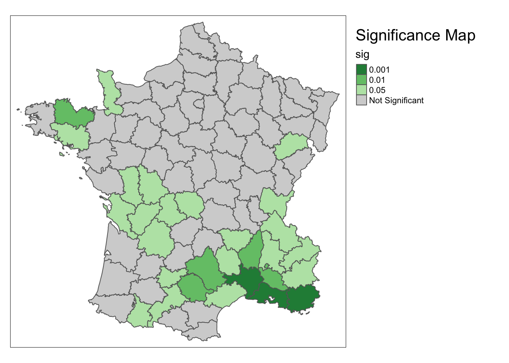
g_pattern <- rep(NA,85)
g_pattern[g > mean(g)] <- "High"
g_pattern[g < mean(g)] <- "Low"
g_pattern[p_value > .05] <- "Not Significant"
guerry <- guerry %>% mutate(g_pattern)pal <- c("#DE2D26", "#3182BD", "#D3D3D3")tm_shape(guerry) +
tm_fill("g_pattern", palette = pal) +
tm_borders() +
tm_layout(legend.outside = TRUE)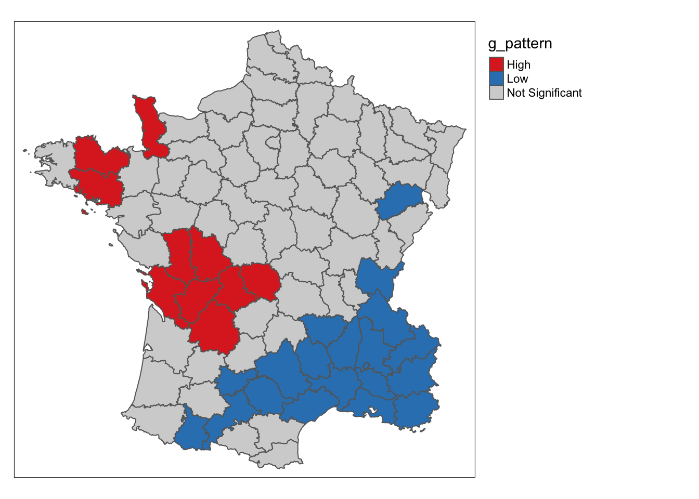
local_g_map <- function(polys,x,weights,permutations,alpha,type = "G"){
#converting the matrix
W <- convert_matrix(weights)
#testing for type G or G* and including diagonal elements for G*
if (type == "G*"){
diag(W) <- 1
}
#computing local statistics and p_values
g <- local_g(x,W)
sims <- local_g_sims(x,W,permutations)
p_value <- get_p_value(sims,g,type = "two-sided")
#assigning cluster classifications
n <- nrow(W)
g_patterns <- rep(NA,n)
g_patterns[g > mean(g)] <- "High"
g_patterns[g < mean(g)] <- "Low"
g_patterns[p_value > alpha] <- "Not Significant"
polys <- polys %>% mutate(g_patterns)
#Creating the correct color palette
classes <- c("High", "Low", "Not Significant")
colors <- c("#DE2D26", "#3182BD", "#D3D3D3")
pal <- match_palette(g_patterns,classes,colors)
#Making the correct map title
if (type == "G*"){
map_type <- "G*"
} else {
map_type <- "G"
}
map_title <- paste0(map_type, " Cluster Map")
#making the cluster map
p1 <- tm_shape(polys) +
tm_fill("g_patterns", palette = pal) +
tm_borders() +
tm_layout(title = map_title,legend.outside = TRUE)
#making the corresponding significance map
p2 <- significance_map(polys,p_value,permutations,alpha)
#outputing both plots
tmap_arrange(p1,p2,ncol = 1)
}local_g_map(guerry,guerry$Donatns,queen.weights,999,.05)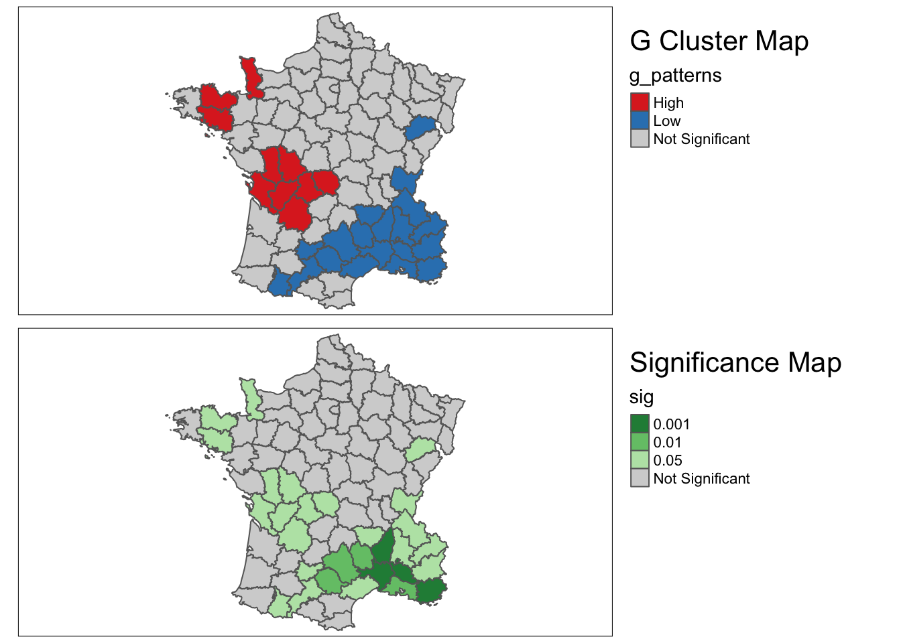
Interpretation and significance
Local Join Count Statistic
Principle
Recently, Anselin and Li (2019) showed how a constrained version of the \(G_i^*\) statistic yields a local version of the well-known join count statistic for spatial autocorrelation of binary variables, popularized by Cliff and Ord (1973). Expressed as a LISA statistic, a local version of the so-called BB join count statistic is
\[BB_i = x_i\Sigma_jw_{ij}x_j\]
where \(x_{i,j}\) can only take on the values of 1 and 0, and \(w_{ij}\) are the elements of a binary spatial weights matrix (i.e., not row-standardized). For the most meaningful results, the value of 1 should be chosen for the case with the fewest observations (of course, the definition of what is 1 and 0 can easily be switched).
The statistic is only meaningful for those observations where \(x_i =1\), since for \(x_i =0\) the result will always equal zero. A pseudo p-value is obtained by means of a conditional permutation approach, in the same way as for the other local spatial autocorrelation statistics, but only for those observations with \(x_i=1\). The same caveats as before should be kept in mind when interpreting the results, which are subject to multiple comparisons and the sensitivity of the pseudo p-value to the actual simulation experiment (random seed, number of permutations). Technical details are provided in Anselin and Li (2019).
Implementation
doncat <- rep(0, 85)
doncat[guerry$Donatns > 10996] <- 1
guerry$doncat <- doncattm_shape(guerry) +
tm_fill("doncat", style = "cat", palette = c("white", "blue")) +
tm_borders()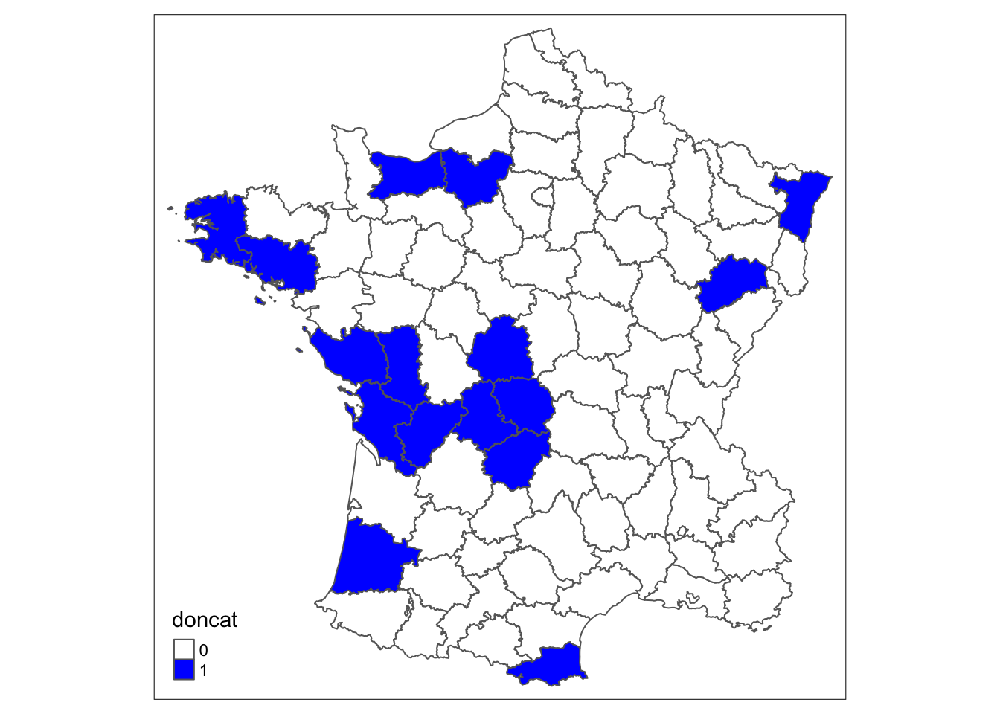
local_bb <- function(x,W){
B <- binarize(W,threshold = .00001)
bb <- x * B%*%x
}
bb <- local_bb(guerry$doncat,W)local_bb_sims <- function(x,W,permutations){
n <- nrow(W)
id <- 1:n
local.sims <- matrix(NA, nrow = n, ncol=permutations)
x.sample = matrix(NA, nrow = n, ncol = permutations)
for(i in 1:n){
sample.indices <- sample(id[-i], permutations, replace = TRUE)
x.sample[i,] <- x[sample.indices]
}
B <- binarize(W,threshold = .00001)
local.sims <- x.sample * B%*%x.sample
local.sims
}sims <- local_bb_sims(guerry$doncat,W,999)
p_value <- get_p_value(sims,bb,type = "one-sided")
significance_map(guerry,p_value,999,.05)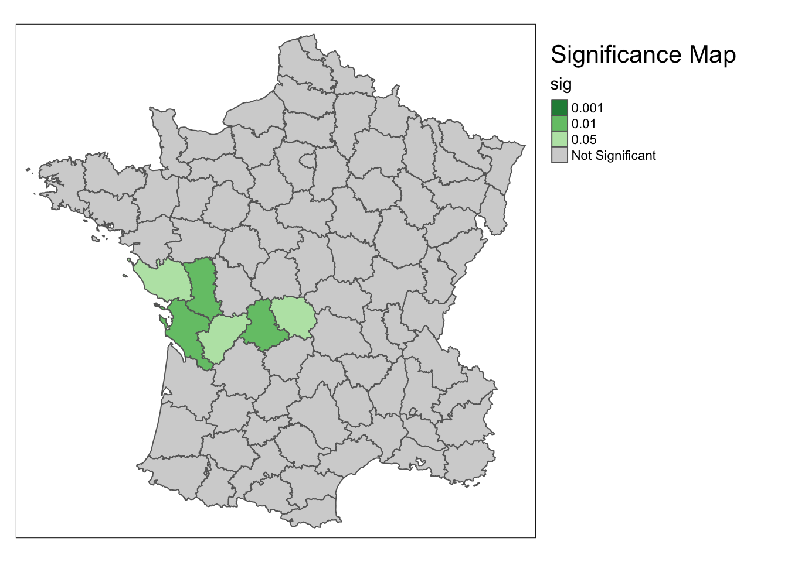
University of Chicago, Center for Spatial Data Science – anselin@uchicago.edu,morrisonge@uchicago.edu↩
Use
setwd(directorypath)to specify the working directory.↩Use
install.packages(packagename).↩